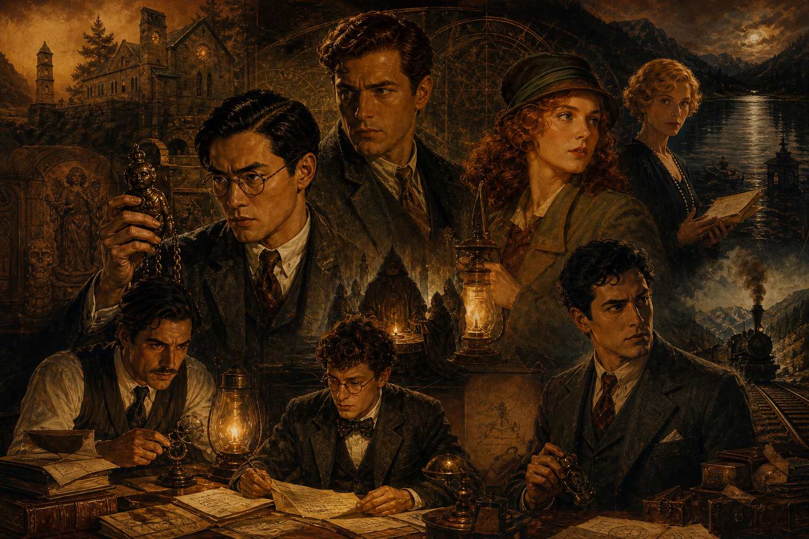

FRH New Player Packet
Investigators in FRH
FRH works best when the investigators are unusual, capable, and socially real. They do not need to be conventional, but they do need to become legible inside a dangerous, haunted modern world.

What Every FRH Investigator Should Feel Like
A good FRH investigator is not just a pile of abilities. They are a person with a way into the world and a way into the mystery. They might be a scholar, medium, lawyer, journalist, traveler, doctor, occult operator, criminal fixer, or something stranger. What matters is that they can contribute usefully and that their gifts, profession, history, and burdens all create meaningful lines of contact with the case.
Characters in FRH are built on a high point total because they are meant to be exceptional. That does not make them invulnerable. It means they get to matter. The game assumes that a player character can bring real skill, real insight, or real force to a problem. The tension comes from what that capability costs, what it fails to cover, and what kind of world it is forced to operate in.
Good Starting Lanes
The Quiet Helper
A healer, administrator, aura-reader, nurse, occult assistant, or person who keeps the group sane, informed, and functional when the room is starting to come apart.
The Field Prodigy
A mobile, practical investigator with strong clue leverage through travel, research, psychometry, law, finance, mechanics, or access to institutions.
The Disciplined Weapon
A dangerous person whose force is real but not mindless: bodyguard, veteran, hunter, boxer, enforcer, or someone with hidden resilience and a reason to aim it carefully.
The Social Occultist
A performer, medium, charmer, confidence operator, or spiritually gifted presence who gets into rooms others cannot and changes what people reveal once there.
The Burdened Scholar
A researcher, antiquarian, linguist, priest, occult academic, or knowledge worker who can read history, pattern, and danger but may also be tempted to push too far.
The Old Survivor
A veteran of earlier damage: detective, explorer, priest, ex-soldier, or someone who has lived long enough with the strange to recognize its pressure before others do.
The Smaller Original NPP Sample Set
Each of these investigators is built to the FRH Character Rules — 375 points, −160 disad limit, TL6, with the required FRH Package. The original New Player Packet used a smaller sample set on purpose. It was not trying to prove the full range of FRH at once. It was trying to show a handful of sturdy entry lanes that new players could understand quickly. Those examples still matter because they reveal the kinds of contributions the game values most clearly at the front door.
- Amber shows the quiet support lane: healer, reader of danger, restrained occult competence, and someone whose usefulness becomes clearer the longer the case runs.
- Matthew shows the field-prodigy lane: mobility, intelligence, clue access, wealth, and unusual investigative reach without becoming a superhero.
- Chaney shows disciplined force: frightening capability under control, built to matter when danger turns physical.
- Melody shows the social occultist: charm, presence, subtle leverage, and the ability to get into rooms where the truth loosens.
- Crispin and Tiberius show higher-risk lanes: brilliant, effective, but more exposed to obsession, pressure, or collapse if played without care.
- Mila shows the burden of age and history: not safety, but accumulated complexity.
The point of this smaller set is not that these are the only good FRH investigators. The point is that they provide a clean first look at what the game actually rewards: useful specialties, distinct clue vectors, and people who can become vivid under pressure.
Secrets, Costs, and Contribution
FRH investigators usually carry hidden powers, hidden affiliations, hidden histories, or all three. That secrecy matters, but it is not there to turn the game into a betrayal contest. It is there because the world of FRH is socially conservative, metaphysically dangerous, and full of institutions that do not react kindly to the truth. The point of your secrets is not merely to punish you for having them. The point is to make the investigator feel like someone who is living a real life under real pressure.
Likewise, disadvantages are not just bookkeeping. They are part of what makes a person vivid. The best FRH characters have strengths that help solve cases and weaknesses that shape how they do it. Competence matters. Cost matters too. The game is strongest when both are visible.
What We Are Looking For In Character Creation
- A person who could plausibly enter a mystery instead of waiting for one to happen to them.
- A real contribution to investigation, field work, social access, occult interpretation, or crisis response.
- A reason to stay with the FRH even when the work becomes difficult.
- A hidden edge, burden, or secret that makes the character more interesting rather than merely more optimized.
- A temperament that can coexist with a team, even if coexistence is occasionally uneasy.